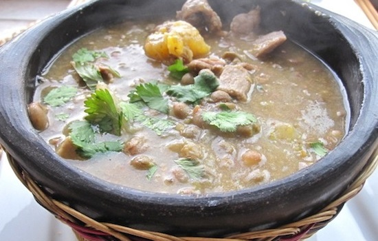
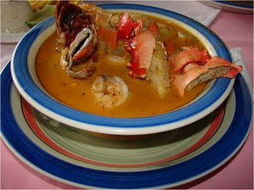

Sopa de Guandú
Caldo Levanta Muertos como dicen los costeños, o como es bien conocido, la Sopa de Guandú. Un sancocho espeso que mezcla algunos ingredientes colombianos con el famoso guandú para lograr un sabor exquisito.
El guandú son unos granos parecidos a las arvejas que se dan en Barranquilla durante el mes de diciembre, pero su mayor punto de cosecha es en febrero, por eso es que el guandú es conocido como el plato típico del Carnaval de Barranquilla.
Ingredientes
- 12 tazas de agua.
- 1 libra de chicharrones tostados y cortados en pedacitos.
- 1 libra de carne para salar.
- 1/2 libra de guandú remojado desde el día anterior.
- 1 libra de ñame pelado y picado.
- 1 plátano amarillo cortado en rodajas.
- 1 yuca pelada y picada.
- 1 taza de guiso con cebolla, cebollín, ajo, tomate, sal y pimienta al gusto.
- 1/2 taza de queso costeño rallado.
Preparación
Recuerda que el primer paso es lavar muy bien todos los ingredientes y lavar cuidadosamente tus manos, solo así puedes empezar a manipular los alimentos y cocinar tu plato típico barranquillero.
Para salar la carne lo único que debes hacer es escoger el pedazo que vas a usar en la sopa, desde el día anterior le pones sal a la carne la dejas de un día para otro y al día siguiente la lavas con agua sal.
Es mejor cocinar con anterioridad el guandú para que quede blando y sea más fácil a la hora de digerirlo, entonces puedes poner a cocinarlo en la olla a presión durante media hora. Cuando esté blandito, le pones la carne salada y lo dejas cocinar durante unos 40 minutos.
Ahora que la carne y el guandú estén blandos, le agregas el plátano, el ñame, la yuca y el guiso y lo dejas cocinar a fuego medio por unos 15 minutos.
Antes de servir, le agregas los chicharrones picados y le agregas sal y pimienta al gusto. Prueba la sopa antes de salpimentarla muchas veces no es necesario ponerle más sal de la que le da la carne salada.
Finalmente, antes de servir le espolvoreas el queso costeño rayado y listo, ahora puedes sentarte a compartir en familia.